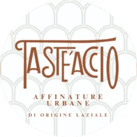
Taste'accio è una grotta a Roma, nel quartiere Testaccio, alla base del Monte dei Cocci, dove maturano i formaggi e si assaggiano i prodotti del Lazio. È la prima grotta di affinamento urbano di formaggi: qui voi e i vostri colleghi vi sedete a tavola fra le forme di formaggio.
Vi proponiamo il pranzo, la cena o l'aperitivo di Natale e, in ogni stagione, il team building con il laboratorio «Arte del Tagliere».
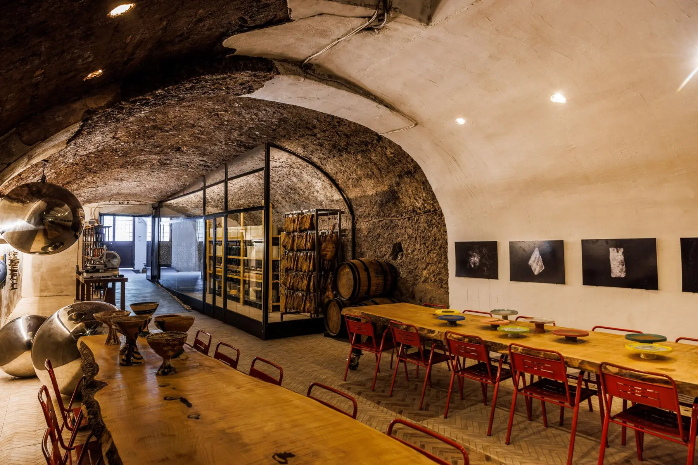
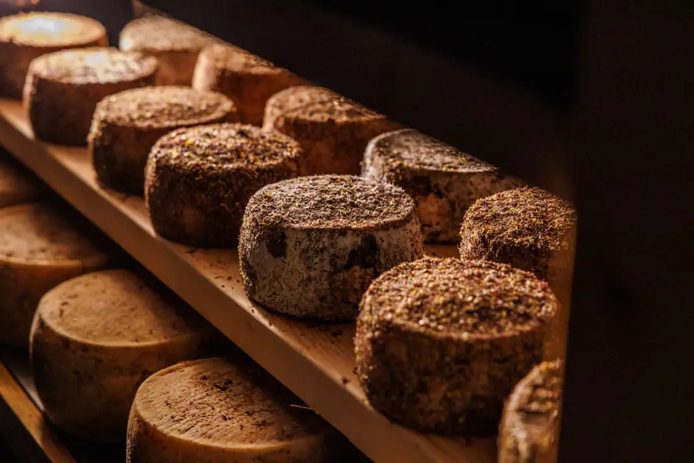
Taste'accio ha aperto nel 2024 a Testaccio: è una bottega con degustazione dei prodotti del Lazio, e ha una grotta di affinamento per i formaggi.
Vincenzo, il fondatore, sceglie da vent'anni i prodotti di piccoli produttori della regione. Io sono Alessia e seguo le prenotazioni e i gruppi, anche su WhatsApp.
Serviamo formaggi, salumi, vini e oli del Lazio, e di ogni prodotto raccontiamo, in italiano o in inglese, da quale paese arriva e chi lo fa.
Lo facciamo dentro la grotta, scavata alla base del Monte dei Cocci: un colle artificiale fatto di milioni di frammenti delle anfore romane che portavano in città olio e altri alimenti. Sugli scaffali maturano i formaggi dei piccoli produttori del Lazio.
Qui si tengono anche incontri con i produttori e mostre di artisti contemporanei, e quello che si è assaggiato si può comprare in bottega.
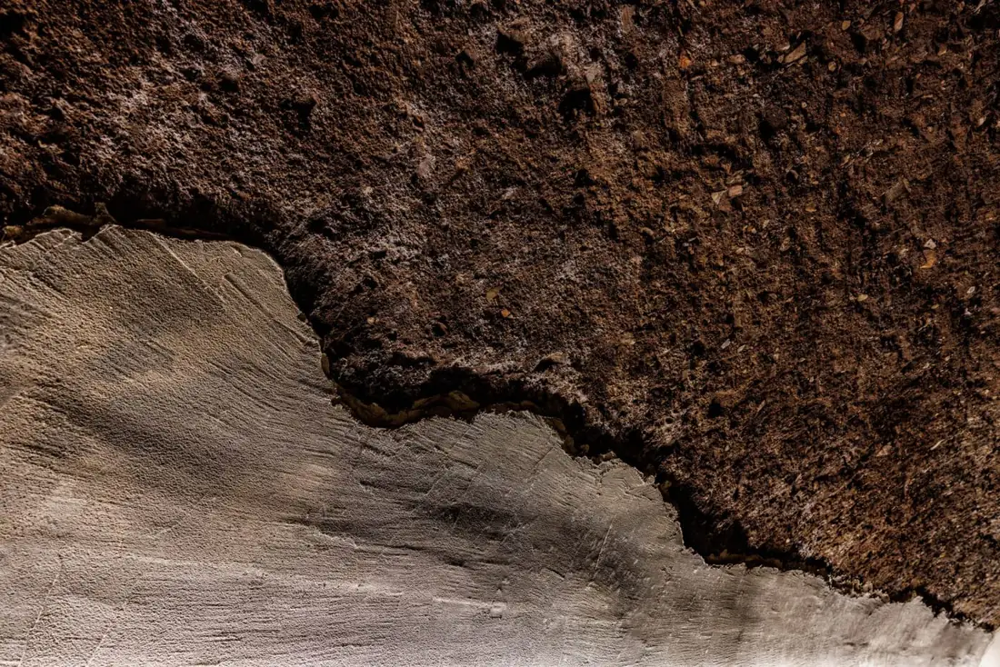
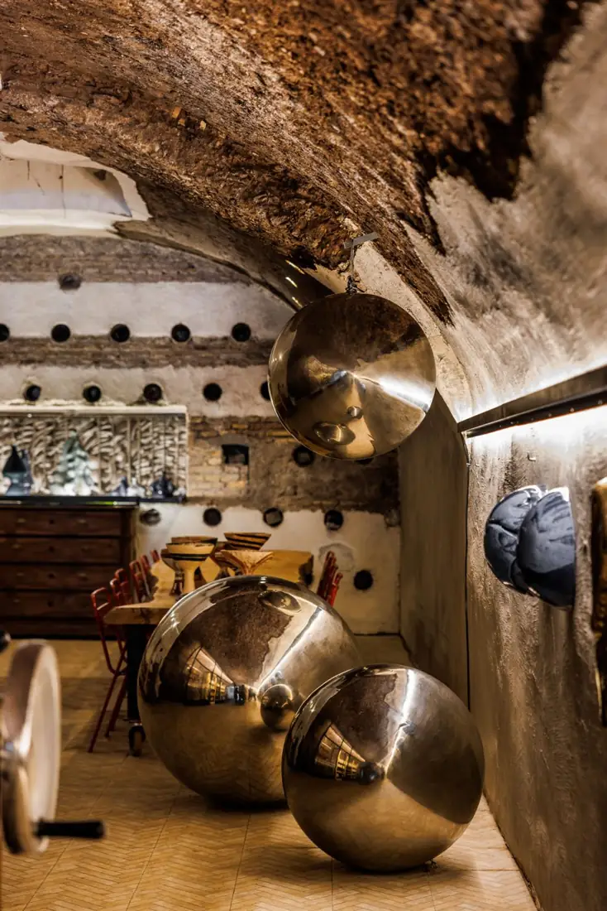
Il Natale aziendale che i colleghi si ricordano, in un posto diverso dal solito ristorante. Scrivetemi: vi rispondo io in giornata e vi aspetto per un sopralluogo con assaggio.
Scrivetemi su WhatsApp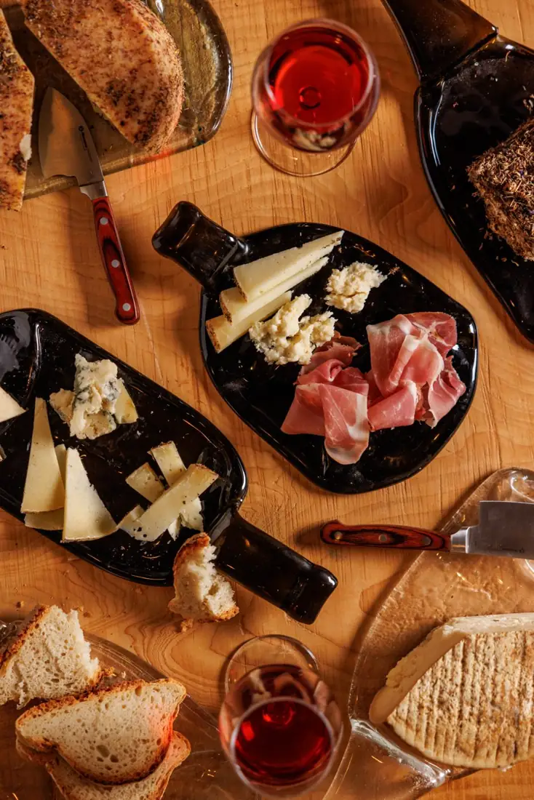
Si comincia con la visita della grotta. Poi, a tavola, si assaggiano quattro formaggi, ognuno di un latte diverso (uno stracchinato di capra, una caciottina di bufala, un pecorino affinato in grotta e un erborinato di vacca), e quattro salumi del Lazio (prosciutto di Bassiano, capocollo, salsiccia di Monte San Biagio e mortadella di maiale nero), con un calice di vino.
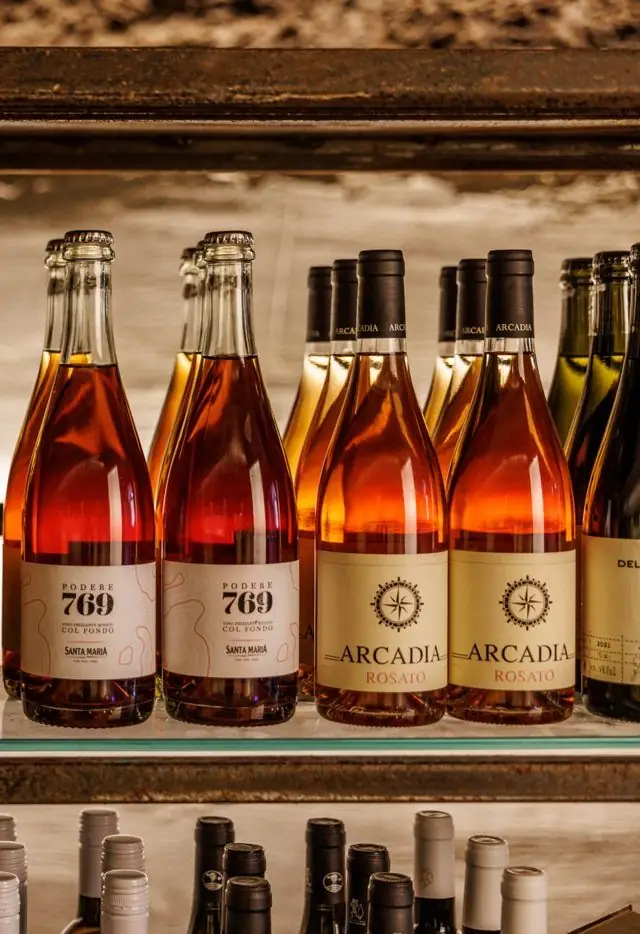
Si servono quattro vini della regione, ciascuno con il formaggio adatto: una bollicina biologica con il caprino fresco, un bianco di terre vulcaniche con il pecorino di grotta, un rosato di Viterbo con la caciottina di bufala e un rosso strutturato con un formaggio di vacca stagionato.
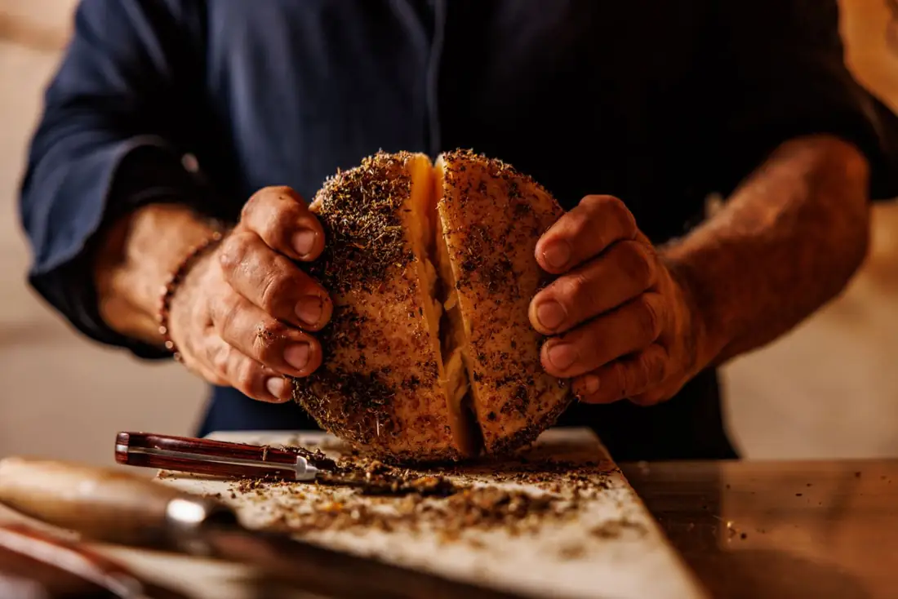
È un laboratorio pratico: si impara a tagliare i formaggi e ad abbinarli, se ne assaggiano cinque rari e alla fine ognuno compone il proprio tagliere.
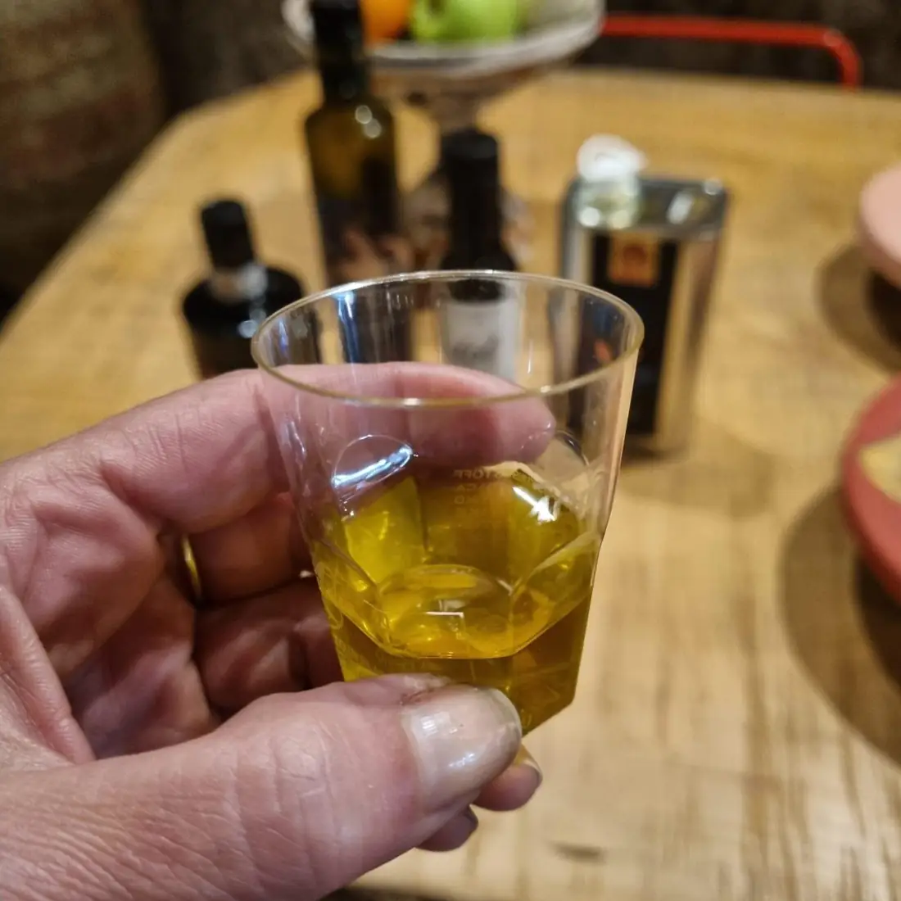
Con il pane a lievitazione naturale si provano quattro oli extravergini DOP di piccoli produttori del Lazio (Sabina, Tuscia, Canino e Colline Pontine) e si imparano le tecniche d'assaggio dei professionisti. Si chiude con un calice di Frascati Superiore DOCG.
Un tocco sul logo e si apre qui un estratto dell'articolo.
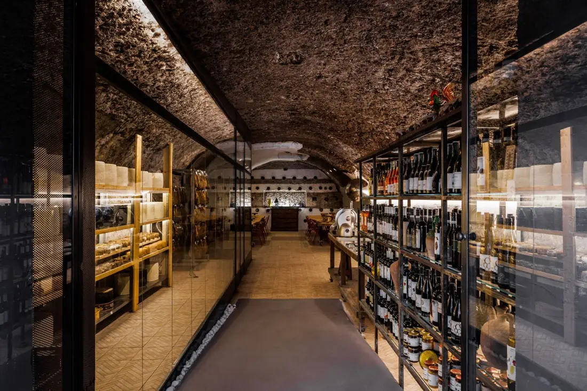
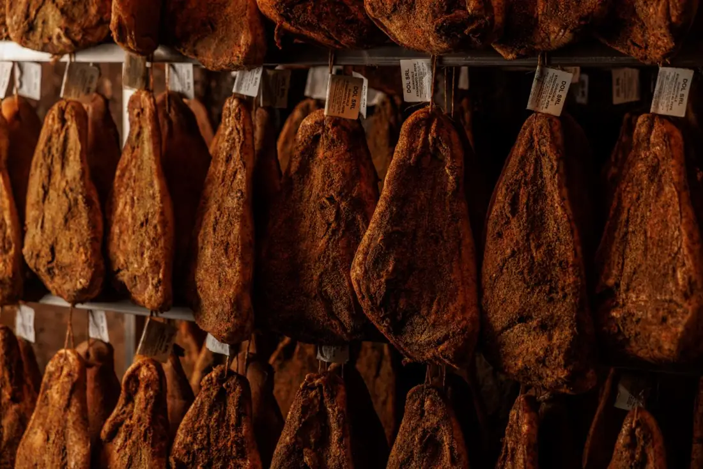
Quattro delle recensioni lasciate su Google, Airbnb, GetYourGuide, Tripadvisor e Viator, parola per parola.
Ho degustato salumi e formaggi davvero unici, coccolata dal personale davvero molto gentile, un'esperienza immersiva in un sito archeologico che vale davvero la pena visitare. Ho apprezzato anche i cocci romani a vista e le opere d'arte contemporanea sparse nella grotta. Esperienza super consigliata!
Un’esperienza stupenda sui formaggi con un host d’eccezione. Vincenzo è preparatissimo sul mondo dei formaggi, sulla produzione e sulla loro storia. Questo ci ha permesso non solo di imparare a preparare un tagliere, ma anche di scoprire molto di più su questo affascinante mondo. Location anch’essa unica: una grotta all’interno del Monte dei Cocci, curata e allestita con grande attenzione. Super consigliato
Varrebbe la pena di prenotare questa esperienza, anche solo per vedere la location. Si entra in una grotta che confina con il monte dei cocci in un’atmosfera incredibile circondati da formaggi ed opere d’arte. Abbiamo preparato un tagliere con dei formaggi incredibili unici accompagnati da un buonissimo vino con un Host d’eccezione che ci ha spiegato tutto circa formaggi taglieri, come tagliare come gustare, insomma un’esperienza davvero meravigliosa.
Un’esperienza bellissima, gustosa e istruttiva in un luogo speciale di Roma. Ho imparato molto sul mondo dei formaggi, ognuno con la sua lavorazione tipica e il modo migliore per essere valorizzato. Ho scoperto come servirli agli ospiti, quali vini abbinarci e, soprattutto, ho assaggiato sapori inediti e sorprendenti. Dal vero pecorino romano alla bufala stagionata, ogni assaggio è stato una scoperta, un piccolo viaggio in un’arte antica custodita con passione. Grazie ad Alessia, Antonio e Vincenzo per averci aperto le porte di un luogo così affascinante!
Il Natale aziendale che i colleghi si ricordano, in un posto diverso dal solito ristorante. Scrivetemi: vi rispondo io in giornata e vi aspetto per un sopralluogo con assaggio.
Scrivetemi su WhatsApp